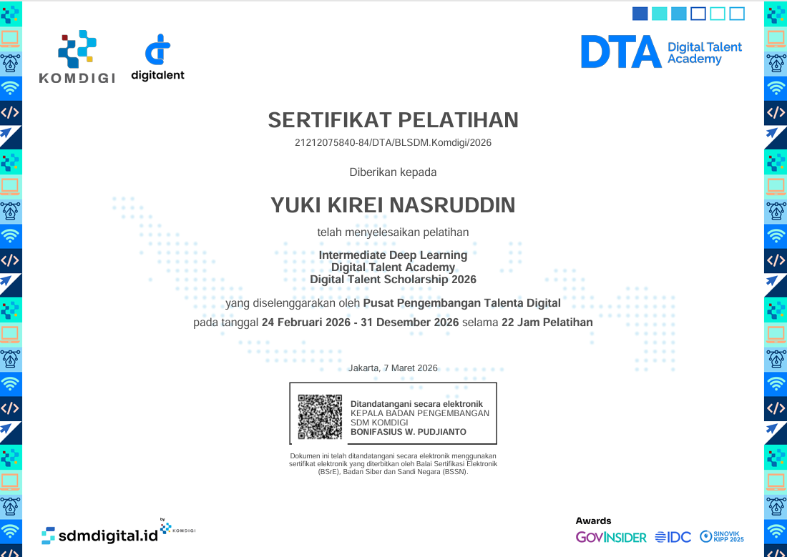
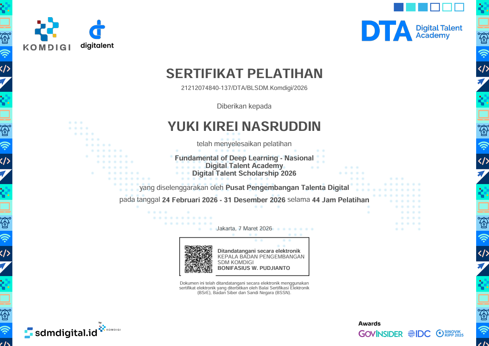
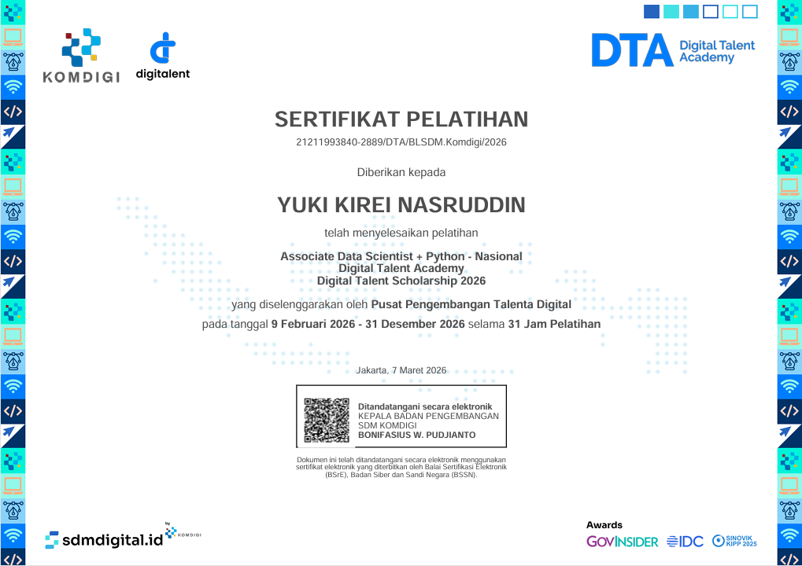
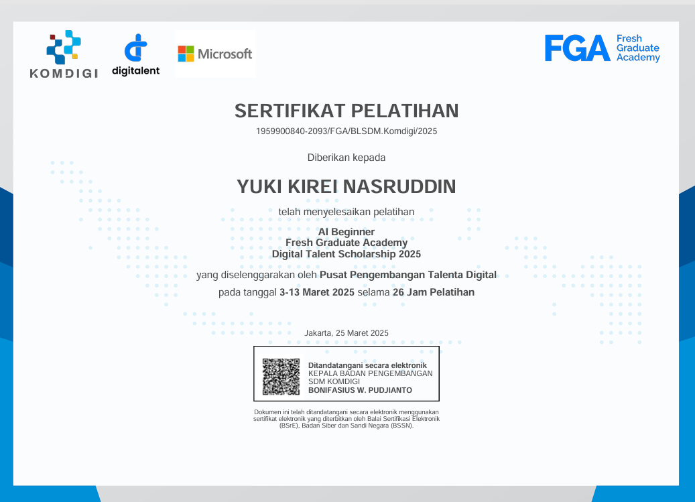
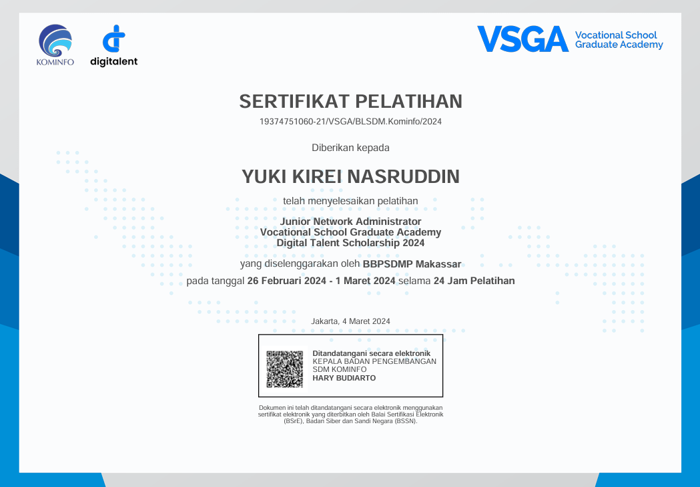
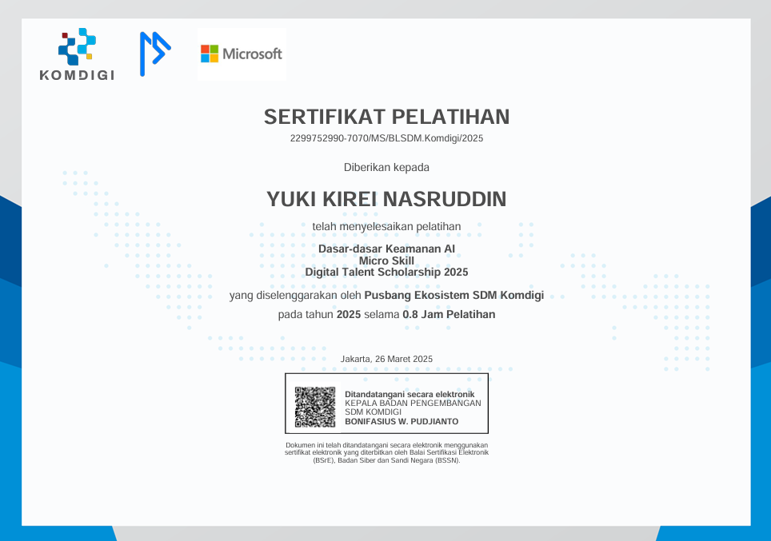

Hallo, I am
Yuki Kirei
Nasruddin
About Me
Approaches technology like an artist with a canvas, seamlessly blending art and logic.
A 6th-semester Computer Science student at Institut Teknologi Bacharuddin Jusuf Habibie (ITH)
Specializing in Artificial Intelligence (AI) and Data Science. Combines strong logical problem-solving skills with a creative perspective to engineer functional and innovative technological solutions.
Demonstrates a proven dedication to transforming complex data into tangible, real-world outcomes. Actively preparing to take on broader roles within the tech landscape.
Skills
Technical & Softskill


Experiences
Field & Infrastructure Support Intern | PT Telkom Indonesia
Juli – Desember 2022
- Melakukan verifikasi harian terhadap ratusan laporan teknis lapangan.
- Mengelola validasi data inventaris pada ribuan titik ODP.
- Mengoordinasikan fleet management untuk efisiensi operasional.
Divisi Dokumentasi & Desain | Kegiatan Habibie Coding Club Cerdas
Mei 2025
- Mengelola dokumentasi rangkaian acara workshop.
- Merancang atribut kegiatan, termasuk poster publikasi, lanyard, dan ID card.
Best Personality Duta Pelajar Sulawesi Selatan
2023-2024
- Berperan sebagai role model dalam pengembangan karakter positif.
- Berdedikasi menjadi jembatan komunikasi bagi pelajar.
Kontribusi Artistik Angkatan | SMK 3 Parepare
2023
- Mewujudkan sketsa wajah Kepala Sekolah sebagai hadiah kenang-kenangan utama.
Projects
Sistem Irigasi Cerdas Berbasis IoT dan Machine Learning
September - Desember 2025
- Merancang prototipe sistem irigasi otomatis berbasis AI & IoT.
- Mengintegrasikan algoritma Random Forest untuk optimasi keputusan penyiraman.
- Membangun aplikasi Android berbasis Flutter sebagai antarmuka manajemen.
Rektifikasi Dokumen dengan Homografi
November 2025
- Mengembangkan sistem identifikasi titik koordinat pada gambar.
- Mengimplementasikan teknik Image Warping untuk mentransformasi citra dokumen.
HOMPIMPA: Hand Object Motion Perception
Desember 2025
- Berperan aktif dalam menyosialisasikan nilai-nilai kebangsaan di lingkungan pendidikan.
Certification

Mastery in Deep Learning
Digital Talent Academy | 2026Sertifikasi yang memvalidasi pemahaman mendalam mengenai arsitektur jaringan saraf tiruan kompleks, optimalisasi model, dan implementasi Deep Learning untuk pemecahan masalah dunia nyata.

Intermediate in Deep Learning
Digital Talent Academy | 2026Menguasai konsep menengah dalam Deep Learning, termasuk tuning hyperparameter, regularisasi, dan evaluasi model klasifikasi.

Fundamental of Deep Learning
Digital Talent Academy | Maret 2026Sertifikasi dasar yang memvalidasi pemahaman konsep awal neural network dan prinsip-prinsip fundamental dari Artificial Intelligence.
Associate Data Scientist-Supervisor
Digital Talent Academy | 2026Sertifikasi tingkat lanjut yang menunjukkan kemampuan dalam memimpin proyek siklus data sains, mulai dari akuisisi data, analisis prediktif, hingga visualisasi dan pengambilan keputusan strategis.

Associate Data Scientist
Digital Talent Scholarship | 2026Membuktikan kompetensi dalam pengolahan data, analisis statistik, dan penerapan machine learning untuk memecahkan masalah bisnis.

AI Beginner
FGA Komdigi | Maret 2025Memahami konsep dasar Kecerdasan Buatan (AI), pengenalan algoritma machine learning, dan observasi implementasi AI pada kasus sederhana.

Junior Network Administrator
VSGA Kominfo | Feb - Mar 2024Membuktikan kompetensi dasar dalam konfigurasi, pengelolaan, dan troubleshooting jaringan infrastruktur komunikasi.

Dasar Keamanan AI
Kementerian Kominfo | 2024Pemahaman mengenai prinsip-prinsip perlindungan data, identifikasi ancaman digital, dan mitigasi risiko keamanan informasi.